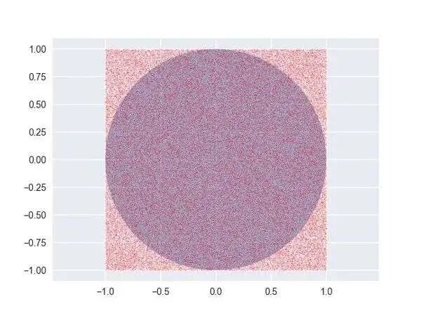
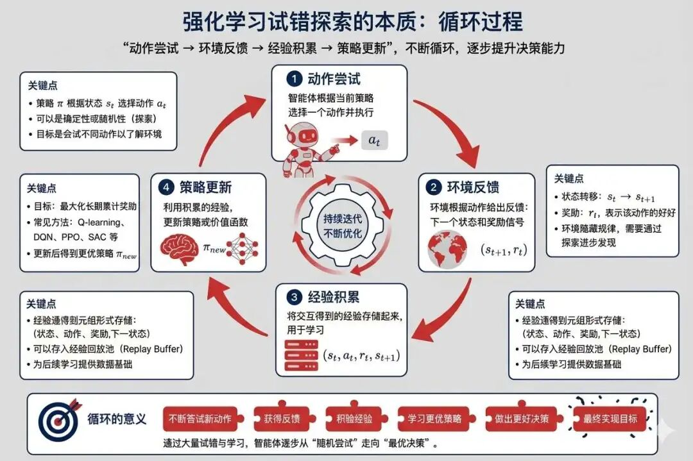
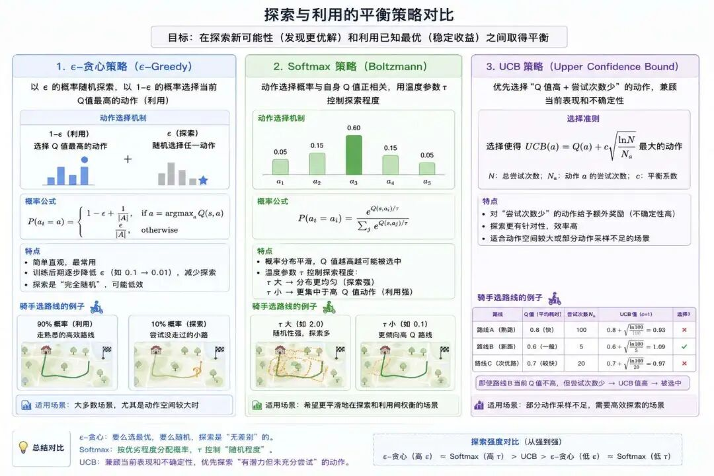

"我们不做行尸走肉，我们不要幽灵飘忽，我们创造与人和谐互助的机器人！"--腾讯Robotics X实验室主任张正友
1946年的冬天，美国洛斯阿拉莫斯实验室里，数学家斯塔尼斯拉夫·乌拉姆正发着高烧。百无聊赖中，他躺在床上玩起了纸牌接龙游戏。一张张牌翻过去，他脑子里却忍不住琢磨：算清这游戏赢牌的确切概率太复杂了，得考虑所有可能的排列组合，简直像数沙漠里的沙子一样难。但转念间，一个"笨"办法跳了出来：要是我不停地玩上几百次、几千次，最后数数赢了多少次，不也能知道个大概吗？
这个念头像一道闪电击中了他。他猛地坐起身，当时实验室正在研制原子弹，一个巨大的难题正困扰着整个团队：如何精确模拟裂变物质里中子的随机扩散？ 传统数学方法面对这种复杂的随机过程几乎束手无策。乌拉姆想："既然纸牌的概率能用重复实验来估算，那一个个中子的随机运动，为什么不能用同样的思路让机器去模拟呢？"
他等不及病好，拄着拐杖就冲进了同事约翰·冯·诺伊曼的办公室。冯·诺伊曼正对着黑板上一堆复杂的微分方程皱眉。听完乌拉姆这个"用重复随机实验代替精确计算"的想法，这位计算机科学的奠基人眼睛瞬间亮了："太妙了！我们可以让计算机'作弊'，用随机数去模拟中子的命运！"
两人立刻在实验室角落密谋起来。为了保密，他们需要一个代号。这时，另一位天才科学家尼古拉斯·梅特罗波利斯笑着提议："叫它'蒙特卡洛'怎么样？" 他指了指乌拉姆，"你叔叔不是总在摩纳哥的蒙特卡洛赌场输钱吗？" 这个名字既暗含了方法的随机本质，就像轮盘赌上的小球一样无法预测，又带着点调侃的意味，很快就被大家接受了。
他们动用了人类历史上第一台通用电子计算机ENIAC。冯·诺伊曼亲自设计了伪随机数生成算法，让这台庞然大物开始"掷骰子"：每一个随机数决定一个中子的运动方向、碰撞结果。计算机日夜轰鸣，打印带吐出海量数据--人类第一次用概率的"笨办法"，驯服了核反应中混沌的随机性。
后来，冯·诺伊曼曾半开玩笑地说过一句名言："判断一个问题该不该用蒙特卡洛方法，就问自己：你敢不敢在赌桌上为它下注？" 而乌拉姆当年在病榻上放下纸牌的那一刻，放下的不仅是一场游戏，而是为人类打开了一扇用随机性照亮确定性迷宫的大门。这把钥匙，从核弹的链式反应开始，最终打开了人工智能、金融预测、乃至宇宙探索的无数可能。
我们说强化学习的出现是为了解决深度学习在复杂不确定环境中失效而出现的一种新AI算法。并且强化学习不需要靠标注数据就能够自动完成任务，这是怎么做到的呢？
要回答这个问题，我们先要回顾一下深度学习的本质。
通过前面课程的学习，我们知道深度学习的本质是从海量的数据中挖掘隐藏的数学模式，而这种"隐藏模式"是原本就是存在的，比如猫狗分类任务之所以能达成的原因在于它们之间的"类别"原本就存在、又比如股票能够预测的原因在于"价值回归"的普适定律。
那强化学习是否也存在着这种内在规律呢？有没有可能看似杂乱无章的世界，其内核是由稳定而简洁的秩序规则构成？
要回答这个问题，我们先来看看蒙特卡洛方法这种统计学方法是怎么求解圆周率π的。
大家都知道，我国是最早计算出圆周率π具体值的国家，早在一千五百多年前，南北朝时期数学家祖冲之就将π精确到小数点后7位：3.1415926。
计算π的方法有多种方法，中国数学家刘徽使用朴素的极限思想，用"割圆术"计算圆周率，他先从圆内接正六边形，逐次分割一直算到圆内接正3072边形。
而蒙特卡洛方法使用的是一种统计学方法来计算圆周率π的，我们直接看下图：

我们生成100000个质地分布均匀的豆子，均匀的撒在整个正方形内，要计算圆周率，首先要计算圆的面积，而这里面有个核心原理就是：
$$ \frac{\text{圆形面积}}{\text{正方形面积}} \approx \frac{\text{圆内点的个数}}{\text{点的总个数}} $$这样就可以估算出单位圆的面积了。
而为了估算π，我们回到这个例子中的参数，可以得到这么一个公式：
$$ \frac{\pi r^2}{(2r)^2} \approx \frac{\text{圆内点的个数}}{\text{点的总个数}} \to \pi \approx 4 * \frac{\text{圆内点的个数}}{\text{点的总个数}} $$而且大数定律的实验告诉我们，随着样本数量的增大，我们用这种方式模拟出来的π值应该是越来越趋近于真实值，样本无穷大的时候就收敛于真值。这就证明了应用大数定理的蒙特卡罗方法的合理性和有效性。
大数定律是概率论的核心基础定律，核心结论可通俗概括为：当随机试验的次数足够多时，事件发生的频率会无限趋近于其理论概率（总体期望），偶然的随机波动会被平均抵消。
比如抛硬币实验：理论上正面概率是50%，抛10次可能出现7次正面（频率70%），但抛10000次时，正面频率会非常接近50%；
强化学习的难点在于真实环境动态未知，状态空间又极其庞大，缺乏明确的状态转移概率方程式以及奖励函数方程式。
为了区别于围棋、迷宫等有明确的状态转移概率的"有模型"环境，这种缺乏状态转移概率方程式以及奖励函数方程式的环境称之为"无模型"环境。
动态规划就是一种强烈依赖"有模型"的强化学习方法，状态转移方程是已知的，还记得之前的青蛙跳台阶的问题吗？状态转移方程就是明确的。
$$ f(n) = f(n-1) + f(n-2) $$而蒙特卡洛方法则是直接通过与环境交互产生数据，再利用这些数据计算动作或状态的期望回报，即状态价值函数 $V(s)$ 或动作价值函数 $Q(s,a)$。
那蒙特卡洛方法和强化学习有什么关系？
强化学习的核心是估计价值函数（$V^\pi或Q^\pi$）和寻找最优策略，而蒙特卡洛方法恰好解决了"无模型时如何估计期望回报"的问题--即利用大数定律，通过大量随机采样的"完整交互轨迹"，用平均回报逼近真实期望。
而蒙特卡洛方法所需的"大量完整交互轨迹"，并非自然存在的现成数据--这就需要强化学习通过一套核心训练机制来主动获取，即"试错探索"。
强化学习的训练机制核心在于"试错探索"，即智能体通过与环境交互，尝试不同动作并根据数据反馈，奖励或惩罚来逐步优化策略。这一过程还需平衡"探索"与"利用"，并依赖动态闭环迭代。
简单来说，智能体没有预设的"正确动作清单"，只能主动与环境持续交互：不断尝试不同的动作，记录下"动作执行后获得的奖励/惩罚"以及完整的交互过程（也就是蒙特卡洛方法需要的轨迹），这些通过"尝试-反馈"收集到的多样化轨迹，正是蒙特卡洛方法估计价值函数的核心数据来源。
而这种"主动尝试、收集反馈"的过程，本身就需要一套逻辑来平衡--既要探索可能带来更优回报的未知动作，又要利用已验证有效的动作避免无意义的试错，这也构成了强化学习动态闭环迭代的基础。
试错探索的本质是"动作尝试->环境反馈->经验积累->策略更新"的循环，我们来详细说说其中包含的每个关键步骤。
智能体在状态 $s_t$ 下选择动作 $a_t$，可能随机尝试新动作，即探索；也可能选择历史最优动作，即利用。
环境返回奖励 $r_{t+1}$ 和新状态 $s_{t+1}$ 。奖励信号是策略优化的唯一指导，例如迷宫问题中到达终点获正奖励，撞墙获负奖励。
将交互数据 ($s_t, a_t, r_{t+1}, s_{t+1}$) ，即（状态、动作、奖励、新状态）存入经验池，打破数据相关性，避免策略"学偏"（如同时存储"辅路提前"、"主路拥堵"的经验）。
策略的更新有两种方法，这两种方法我们后续都将会进行详细的学习。
其中基于价值的方法，即更新动作价值函数 Q(s,a)，这个函数我们在之前两讲已经重点学习过，而著名的Q-learning即是基于价值的策略更新算法。
另外一种基于策略梯度算法，即直接优化策略网络参数 $\theta$，则是联系了深度学习中的神经网络参数化过程，通过梯度上升最大化期望累积奖励。

试错的核心是平衡"探索"与"利用"，本质是解决"短期效率"与"长期最优"的矛盾，
试想如果一直随机尝试新动作，比如骑手每次都走陌生路线、乱排配送顺序，哪怕遇到过"辅路绕堵"这种高效方案，也不重复使用，只会陷入"无意义试错"。不仅浪费时间（如绕路超时、用户差评），还无法积累有效经验，策略永远停留在"随机水平"，根本达不到"高效配送"的目标。
一昧的只利用也不行，如果只依赖历史最优动作，比如骑手永远走同一条主路、同一配送顺序，会陷入"路径依赖"：一旦环境变化，如主路突发施工拥堵、新开通隧道更快捷，旧策略会瞬间失效，导致配送超时率飙升，且永远发现不了更好的方案，最终被动态变化的环境淘汰。
因此需要一些科学的策略来平衡探索与利用的比例，以下是一些常用的平衡策略：

这种试错和探索机制成为了强化学习通向AGI的内生动力，但也面临不少挑战，而这些挑战也是驱动强化学习算法持续迭代、新方法不断涌现的根本动力。
第一个挑战是"不知道努力有没有用"，奖励信号极少，仅在达成最终目标，如骑手送达、LLM生成合格答案或彻底失败时才反馈，中间过程无任何指导，智能体"无从下手"。
这种问题导致的直接后果就是训练缓慢，智能体容易陷入"随机试错"，甚至因长期无奖励而停止学习，比如骑手一直绕路超时，无法积累有效经验。
当动作空间庞大（如LLM调优有"量化精度×batch size×并行策略×学习率"等数十种组合）或动作连续（如调整机器人移动速度）时，盲目探索会导致"无效试错占比极高"，浪费资源（时间、硬件成本）。
这导致需要海量交互数据才能达成目标，样本效率低下，训练周期过长，工程落地难度大。
还有一种情况是智能体容易因"过度利用"陷入局部最优，即当前动作的回报已经不错，但存在未探索的"全局最优动作"，但智能体不再尝试，导致策略无法进一步优化，停留在"够用"而非"最优"，无法适应更高要求的任务目标。
"不敢试错，怕出风险"是试错和探索机制中另一大问题，比如高风险场景中，探索动作可能触发安全事故（如撞车、系统崩溃），必须在"安全底线"内探索，导致探索范围被严格限制，难以发现更优策略。
可以说解决上述挑战成为了强化学习算法演化过程中的主旋律，我们在学习强化学习算法的时候要理解其本质，就要紧密关注这些挑战的应对方法。
讲了这么多，还是离不开实战环节，我们通过一段伪代码尝试来理解一下强化学习的训练流程。
首先是环境和策略的初始化，先是搭建好环境，然后需要选择最终强化学习训练得到的策略函数类型是什么。
1）环境搭建（Environment Setup）
2）策略初始化（Policy Initialization）
策略函数（Policy）需要进行随机初始化，这取决于你选择各种策略函数类型：
# 1
环境 = 创建环境() # 例如：迷宫、机器人仿真环境
智能体 = 初始化智能体() # 包含策略网络（Actor）或Q表（Q-learning）
经验池 = 创建经验回放池() # 存储交互数据（状态, 动作, 奖励, 下一状态）
# 2
总训练轮数 = 1000 # 训练的总回合数（Episodes）
探索率 ε = 0.5 # 初始探索概率（后期逐步衰减）
学习率 α = 0.01 # 控制参数更新幅度
折扣因子 γ = 0.9 # 权衡当前与未来奖励的重要性接下来是实现"试错和探索"机制的关键，智能体通过多轮（Episodes）迭代学习，每轮包含多次时间步（Timesteps）：
1）状态感知与动作选择
智能体首先观测当前状态 $s_t$（如机器人当前位置），根据平衡策略选择动作：
2）环境反馈与经验存储
根据选择的动作，在执行后返回该动作的及时奖励、新状态，并将（旧状态、动作、及时奖励、新状态）放到经验池：
3）策略优化与价值更新
策略的具体更新方式取决于是基于价值函数还是基于神经网络，后者将通过更新梯度间接更新策略。
for 轮次 in range(总训练轮数):
# 1. 重置环境并开始新回合
状态 = 环境.重置() # 获取初始状态（如机器人起始位置）
累计奖励 = 0
done = False # 标记回合是否结束
while not done: # 逐步交互直至回合结束
# 2. 选择动作：平衡探索与利用
if 随机数() < ε: # 以概率ε随机探索
动作 = 随机选择(可用动作列表) # 例如：随机转向、跳跃
else: # 以概率1-ε利用已知策略
动作 = 智能体.预测动作(状态) # 从策略网络/Q表选择最优动作
# 3. 执行动作并获取环境反馈
下一状态, 奖励, done = 环境.执行(动作) # 环境返回新状态和即时奖励
累计奖励 += 奖励
# 4. 存储经验到回放池
经验池.存入(状态, 动作, 奖励, 下一状态, done) # 存储单步交互数据
# 5. 更新策略（间隔更新或批量更新）
if 经验池.数据量() > 批次大小:
# 从经验池随机抽样一批数据
批次数据 = 经验池.随机采样(批次大小)
# 6. 计算目标值（因算法而异）
if 算法 == "Q-learning":
# Q-learning更新：目标值 = 奖励 + γ * 下一状态的最大Q值
Q目标值 = 奖励 + γ * max(智能体.Q表[下一状态])
智能体.Q表[状态][动作] += α * (Q目标值 - 智能体.Q表[状态][动作])
elif 算法 == "策略梯度（如PPO）":
# 策略梯度：计算优势函数，更新网络参数
优势值 = 计算优势(奖励, 智能体.价值网络(下一状态))
策略损失 = -log(动作概率) * 优势值 # 通过梯度上升最大化期望奖励
智能体.策略网络.反向传播(策略损失)
# 7. 状态转移
状态 = 下一状态 # 进入下一时间步
# 8. 衰减探索率（后期侧重利用）
ε = ε * 0.995 # 逐步降低随机探索概率为应对"试错与探索"机制的挑战，提高效率和稳定性，上面的代码还结合了以下方法：
1）经验回放（Replay Buffer）
从历史数据中随机抽样训练，打破数据相关性（Off-policy方法如DQN/SAC）。
2）探索率衰减（ε-Decay）
训练初期 ε 较高（如0.9），鼓励探索；后期降低 ε（如0.01），侧重利用已知策略。
3）奖励塑形（Reward Shaping）
设计密集奖励（Dense Reward）替代稀疏奖励，例如机器人行走任务中，奖励"前进速度"而非仅"到达终点"。
4）并行环境采样
同时运行多个环境副本（如Stable-Baselines3的VecEnv），加速数据收集。
训练结束之后，需要对模型进行保存，以及对齐性能进行评估。
1）模型保存
2）性能测试
在独立测试环境中运行策略，评估指标如：
# 1
智能体.保存模型("策略网络.pt") # 保存神经网络参数或Q表
# 2
测试奖励 = 0
测试状态 = 环境.重置()
while not done:
测试动作 = 智能体.预测动作(测试状态) # 测试阶段禁用探索，完全依赖策略
测试状态, 奖励, done = 环境.执行(测试动作)
测试奖励 += 奖励
print("最终测试奖励:", 测试奖励) # 评估策略效果最后回顾一下，我们从一场病榻上的纸牌游戏出发，看到乌拉姆和冯·诺伊曼如何用"重复随机实验代替精确计算"的笨办法，驯服了核反应中混沌的随机性。
这个被称为蒙特卡洛的思想，恰好回答了强化学习最棘手的难题--当环境的状态转移方程与奖励函数都无从知晓时，智能体不必去推演那个写不出来的方程，只需在大量真实交互中反复采样，用平均回报去逼近真实期望。
换句话说，强化学习把深度学习"从数据中挖掘隐藏规律"的思路，延伸到了一个没有现成数据、必须自己动手创造数据的世界里。
而创造数据的引擎，正是贯穿全篇的"试错探索"：智能体在"动作尝试->环境反馈->经验积累->策略更新"的闭环中不断打磨自己的策略，并始终在"探索未知"与"利用已知"之间寻找微妙的平衡。
稀疏奖励、探索效率、局部最优、安全约束这四道难关，看似是绊脚石，实则是强化学习算法一路演化、新方法层出不穷的真正动力。理解了这套思想框架，我们才算握住了打开强化学习大门的钥匙，下一篇，我们将沿着这条线索，走进具体强化学习算法的世界。
蒙特卡洛方法（Monte Carlo Method） ：通过大量随机采样的统计结果来逼近真实值的数值计算方法，其名取自摩纳哥的赌场，暗喻"以随机性求解确定性"的核心思想。在强化学习中，它无需知道环境的状态转移方程，仅靠大量"完整交互轨迹"的平均回报即可估计价值函数，正是无模型环境下估计期望回报的关键武器。
大数定律（Law of Large Numbers） ：概率论的核心基础定律：当随机试验次数足够多时，事件发生的频率会无限趋近其理论概率，偶然波动被平均抵消。它是蒙特卡洛方法成立的数学根基--保证了"用采样平均逼近真实期望"这一做法的合理性与收敛性。
无模型环境（Model-Free Environment） ：缺乏明确状态转移概率方程与奖励函数方程的环境，与围棋、迷宫等"有模型"环境相对。现实世界的绝大多数决策问题都属于此类，智能体无法靠预设方程推演，只能通过实际交互去摸索规律，这正是强化学习区别于动态规划的根本场景。
试错探索（Trial-and-Error Exploration） ：强化学习获取训练数据的核心机制：智能体没有预设的"正确动作清单"，只能主动与环境交互，尝试不同动作并依据奖励/惩罚反馈逐步优化策略。它遵循"动作尝试->环境反馈->经验积累->策略更新"的动态闭环，是为蒙特卡洛方法源源不断生产交互轨迹的引擎。
探索与利用的平衡（Exploration-Exploitation Trade-off） ：试错过程中必须权衡的一对矛盾：探索指尝试未知动作以发现潜在更优解，利用指重复已验证有效的动作以保证收益。本质是"长期最优"与"短期效率"的博弈--只探索会陷入无意义试错，只利用会陷入路径依赖，ε-贪心、Softmax、UCB等策略正是为科学调控二者比例而生。
经验回放（Experience Replay） ：将交互产生的  数据存入经验池、训练时随机抽样的机制。它打破了相邻数据间的强相关性，避免策略"学偏"，并让历史经验得以反复利用，是 DQN、SAC 等 Off-policy 算法提升样本效率与训练稳定性的关键设计。
稀疏奖励（Sparse Reward） ：奖励信号仅在达成最终目标或彻底失败时才出现、中间过程毫无指导的困境。它会让智能体"不知道努力有没有用"，极易陷入随机试错甚至停止学习，是强化学习落地的主要障碍之一，也催生了奖励塑形（Reward Shaping）等一系列应对方法。